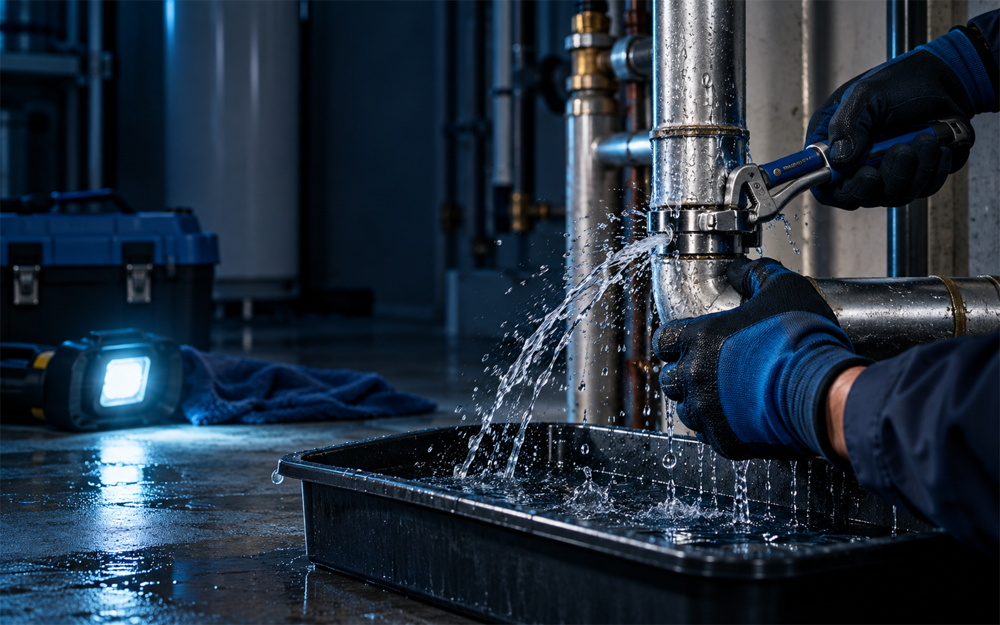

Havárie 24/7
Konkrétní rozsah a termín vždy domluvíme podle zadání.

Havarijní zásahy, voda, topení a servis plynových kotlů v Liberci.
Konkrétní rozsah a termín vždy domluvíme podle zadání.
Konkrétní rozsah a termín vždy domluvíme podle zadání.
Konkrétní rozsah a termín vždy domluvíme podle zadání.
Konkrétní rozsah a termín vždy domluvíme podle zadání.
Havarijní zásahy, voda, topení a servis plynových kotlů v Liberci. Nejdříve si upřesníme situaci, rozsah práce a vhodný termín. Díky tomu dostanete postup, který odpovídá vašemu konkrétnímu zadání.
Veřejný profil uvádí havárie, vodu, topení a servis plynových kotlů.
Uvedené služby a kontakty vycházejí z veřejně dostupných firemních profilů. Fotografie je ilustrační oborový vizuál.
Zavolejte nebo napište. Podle typu práce a lokality se domluví další krok.
Stačí stručně popsat situaci, místo realizace a přibližný rozsah. Pokud máte fotografie, můžete je zmínit při prvním kontaktu.
Použijte telefon nebo e-mail uvedený níže. Přesný rozsah se potvrdí individuálně.
Havlíčkova 129/7, 460 07 Liberec, Horní Růžodol
Liberec